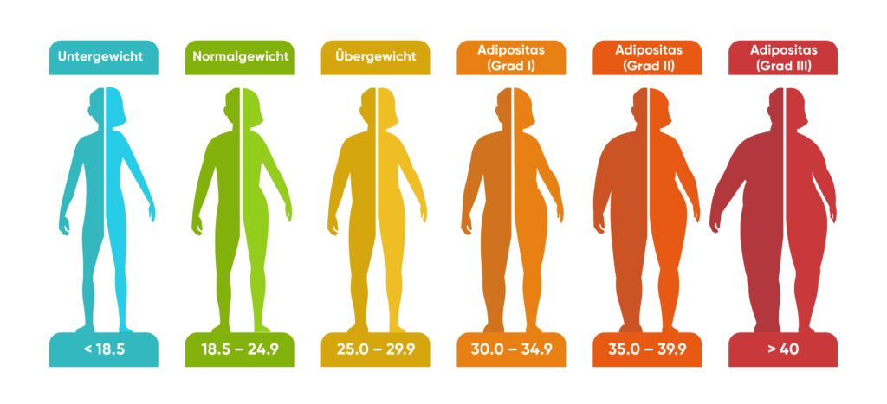
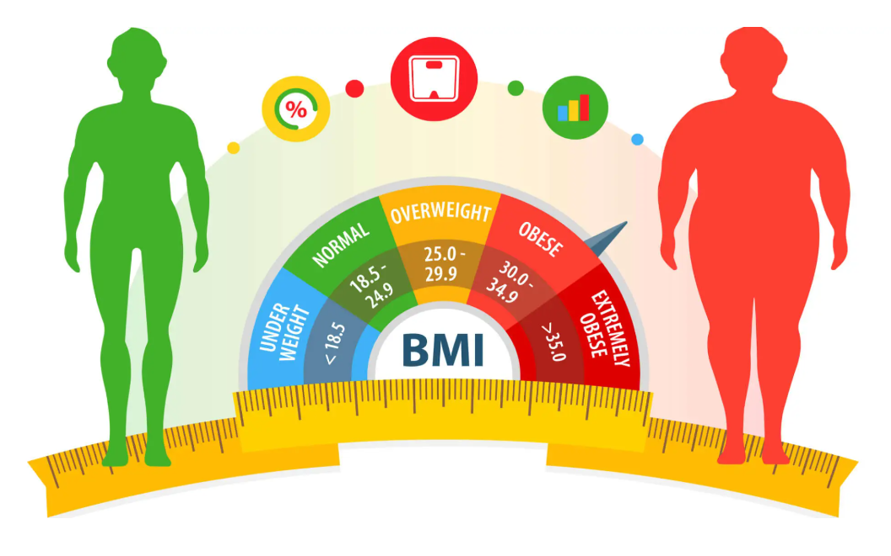

Body Mass
Index Calculator
Body mass index or BMI gives an indication of your body size. BMI is calculated using your weight and height. Along with several other factors, like your blood pressure and cholesterol, BMI can help estimate your risk of a heart attack or stroke.
Welcome!
Your BMI is...
Enter your height and weight to see your BMI result
Personalized Recommendations:



Interpretation of Your BMI Result
A BMI below 18.5 is considered underweight, which may lead to a weaker a calorie-rich diet with healthy fats, proteins, and whole grains, like avocados, nuts, dairy, and lean meats. Light exercises like yoga or stretching can help improve muscle tone. Regular check-ups with a healthcare provider can ensure safe and healthy weight gain.
A BMI range of 18.5 to 24.9 is considered as a healthy weight. Maintaining a healthy weight may lower your chances of experiencing health issues later on, such as obesity and type 2 diabetes. Aim for a nutritious diet with reduced fat and sugar content, incorporating ample fruits and vegetables. Additionally, strive for regular physical activity, ideally about 30 minutes daily for five days a week.
A BMI above 24.9 is considered overweight, which may increase the risk of health issues like diabetes or heart disease. Focus on a balanced, calorie-controlled diet by reducing processed foods and sugary drinks while increasing fiber-rich foods like fruits, vegetables, and whole grains. Engage in regular moderate-intensity exercises such as walking, jogging, or cycling for at least 30 minutes, five days a week. Consulting a healthcare professional can help create a personalized plan for healthy weight management.
Healthy eating
Healthy eating promotes weight control, disease prevention, better digestion, immunity, mental clarity, and mood.
Regular exercise
Exercise improves fitness, aids weight control, elevates mood, and reduces disease risk, fostering wellness and longevity.
Adequate sleep
Sleep enhances mental clarity, emotional stability, and physical wellness, promoting overall restoration and rejuvenation.
Stress Management
Practicing stress-reducing activities such as meditation, mindfulness, deep breathing exercises, or engaging in hobbies can significantly improve well-being.
Hydration
Adequate hydration helps regulate body temperature, flushes out toxins, and keeps joints lubricated.
Routine Health Check-ups
Monitoring factors like blood pressure, cholesterol, and blood sugar levels can prevent serious conditions from developing unnoticed.
BMI Limitations
While BMI is a commonly used indicator of healthy weight, it may not be suitable for everyone. Certain groups should interpret their BMI results with caution, and in some cases, it may not provide an accurate reflection of an individual's health.

Gender
Men and women have different body compositions. Women generally have more body fat than men, which can affect BMI readings.
Age
BMI may not accurately reflect body fat in older adults or children, as their body composition changes with age.
Muscle
Muscular individuals may have a higher BMI due to increased muscle mass, which weighs more than fat, leading to a misleading classification.
Pregnancy
BMI doesn't account for the added weight during pregnancy, w hich can result in inaccurate assessments of health during this time.
Race
Different racial groups may have variations in body fat distribution, which means BMI may not equally represent health risks across all races.